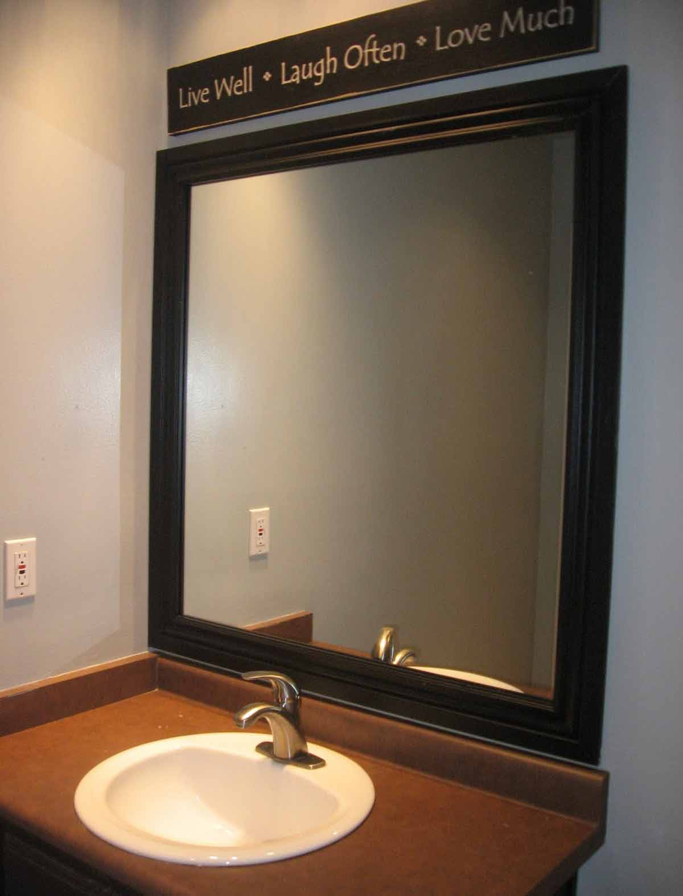

Semakin berkembangnya dunia pembangunan, karenanya hadir banyak material penambah yang melengkapi estetika sebuah banguanan. Kaca semakin melengkapi bangunan supaya menonjol lebih menawan dan mempunyai poin estetika kalau di pandang orang. Kaca juga umum dipakai sebagai material untuk pintu, furnitur, railing tangga, shower box, kanopi, table top, dan malah panel dinding.
Sekarang telah hadir berbagai maca jenis kaca yang bisa dijumpai, tiap-tiap kaca mempunyai fungsinya masing-masing. Dapat untuk system keamanan, keindahan dan masih banyak yang bisa di dapatkan dari pemasangan kaca. Ragam kaca-kaca tersebut diantaranya ialah kaca tempered, kanopi kaca Kepulauan Seribu, kaca frameless, kaca cermin, railing kaca dan masih banyak variasi kaca lainnya yang bisa anda dapatakan dan anda aplikasikan pada bangunan. Segala material tersebut dapat di aplikasikan harga sebuah hunian tampak lebih menawan nyaman dan juga aman. Berikut ini sedikit review mengenai kaca bagi sebuah banguanan, fungsi utama dan bagaiman memilih kaca yang pantas untuk sebuah hunian bagus rumah, kantor ataupun gedung. Akan di jelaskan juga mengenai lantai kayu jati terbaik yang bisa anda beli.
Distributor, Supplier & Jasa Pasang Kanopi Kaca Kepulauan Seribu
Atap kaca skylight banyak diterapkan pada rumah, gedung, kantor, café yang mengusung gaya modern untuk membikin efek cahaya yang dramatis pada ruangan bagian bawahnya serta memberi kesan modern pada bangunan. Canopy kaca dengan atap kaca memang sebuah bangunan yang asangat elgan untuk jaman modern seperti kini ini dengan harga yang sungguh-sungguh lumayan jika di bandingkan kanopi atap lazim. Cara ini memang desain shower berbahan kaca memang lebih banyak dipakai ketimbang desain shower berbahan tirai. Disinilah letak perbedaan optis yang utama antara akrilik (acrylic) dengan kaca. Apabila tembus pandang, kaca menyerap cahaya yang masuk sehingga kian tebal kaca karenanya semakin sedikit cahaya yang bisa melewatinya, karenanya sifat transparannya makin berkurang.|Di samping pintu kaca shower akan membuat kamar mandi kecil terlihat lebih besar. Pada atap akrilik, absorpsi sinar yang terjadi demikian kecil sehingga meski ketebalannya bertambah, sifat transparannya tak banyak berubah.
Seiring dengan perkembangan dunia properti, sekarang kanopi kaca Kepulauan Seribu tempered telah berkembang kencang mengikuti arsitektur modern. Disana anda dapat menerima atap kanopi kaca Kepulauan Seribu dengan mutu terbaik dan harga terjangkau. Dis.or.id juga menyediakan jasa pemasangan kanopi kaca Kepulauan Seribu yang tentunya dengan bantuan tenaga professional yang telah berpengalaman. Sekiranya fungsi utama kanopi sebagai pelindung untuk bangunan tersebut, pemasangan kanopi kaca Kepulauan Seribu juga bisa membuat bangunan menjadi kelihatan lebih menawan dan menarik, apalagi menerapkan konsep yang sama dengan konsep rumah minimalis. Setelah kaca untuk atap kanopi cukup digemari.
Info Lengkap Pemesanan
Google Maps: https://www.google.com/maps/d/u/0/viewer?mid=12-N5cMmHbEOEG6n-94L4JatnBnNRTFkr&ll=-7.27380280025364%2C112.65243155000007&z=18
Note: https://www.facebook.com/notes/distributor-of-industrial-supply/kontraktor-jasa-pasang-kanopi-kaca/1785710151728864/
Event: https://www.facebook.com/events/227495344457982/
Portfolio Produk: https://www.facebook.com/1681607345472479/photos/?tab=album&album_id=1712629809036899
Distributor & Supplier Kaca Shower
Kaca shower adalah kotak atau alat yang berfungsi sebagai penyekat ruang khusus untuk kamar mandi. Kelebihan shower screen dibanding dengan sistem penyekatan yang lain merupakan dijadikan dalam bentuk yang sudah jadi dan tinggal dipasang saja. Tidak hanya cantik melainkan kaca shower dapat menjadi kaca pembatas antara lantai kering dan berair pada kamar mandi.
Disana anda dapat mendapatkan kaca shower yang pastinya pantas untuk kamar mandi anda.
Distributor, Supplier & Jasa Pasang Kanopi Kaca

Seiring dengan perkembangan zaman di dunia properti, sekarang kanopi kaca Kepulauan Seribu telah berkembang kencang meniru arsitektur modern. Diantaraya ialah kaca tempered 8 mm, kaca tempered 10 mm clear, kaca tempered 12 mm clear, kaca laminated 12 mm clear, kaca laminated 5 mm + 5 mm clear non tempered kaca, kaca laminated 5 mm + 5 mm tempered clear dan masih banyak lagi. Atap kaca skylight ditujukkan untuk mendapatkan sinar natural UV yang mempunyai fungsi sebagai penerangan dalam sebuah ruang. Ada sebagian alasan mengapa Pintu Kaca Shower banyak dipakai salah satunya ialah kaca lebih menonjol bersih dan rapi dan juga lebih gampang dalam perawatannya. Jika tembus pandang, kaca meresap cahaya yang masuk sehingga kian tebal kaca karenanya kian sedikit sinar yang dapat melaluinya, maka sifat transparannya makin berkurang.|Di samping pintu kaca shower akan membuat kamar mandi kecil nampak lebih besar. Pada atap akrilik, peresapan sinar yang terjadi demikian kecil sehingga padahal ketebalannya bertambah, sifat transparannya tak banyak berubah.
Dis.or.id dapat membantu anda yang berkeinginan memasang atap kaca skylight pada gedung, dengan berbagai kelebihan yang dapat anda dapatkan dengan memanfaatkan jasa yang di tawarkan dis.or.id. Disana anda bisa mendapatkan atap kanopi kaca Kepulauan Seribu dengan kualitas terbaik dan harga terjangkau. Banyak bangunan seperti gedung perkantoran, perumahan, ruko dan apartement yang mengaplikasikan kanopi kaca Kepulauan Seribu tempered. Jika fungsi utama kanopi sebagai pelindung untuk bangunan hal yang demikian, pemasangan kanopi kaca Kepulauan Seribu juga bisa membuat bangunan menjadi tampak lebih cantik dan menarik, apalagi memakai konsep yang sama dengan konsep rumah minimalis. Tidak anda sedang mencari kanopi kaca Kepulauan Seribu, anda dapat langsung mengunjungi dis.or.id. Disana anda akan mendapat kanopi kaca Kepulauan Seribu yang layak dengan bermacam-macam ketebalan dan harga yang cukup relatif murah.
Jasa Maintenance Kaca
Lazimnya ditahui banyak pemilik gedung kaca yang mau merawat bangunan. Kaca menjadi kusam. Dis.or.id mempunyai energi pakar yang bisa kapabel membersihkan gedung pencakar langit yang bangunannya terbuat dari kaca. Tenaga yang di gunakan untuk jasa maintenance kaca diantaranya godole, rope access, crane, dan scaffolding.
Dengan memakai bahan pembersih yang akan membikin kaca nampak bersih seperti pertama kali dipasang.
Dis.or.id juga sudah mempersiapkan dengan berbagai alat yang bisa diterapkan untuk menjangkau semua sudut gedung, sekalipun gedung Anda benar-benar tinggi.
Jasa Pemasangan Kaca Tempered
Kini jasa pemasangan kaca tempered menjadi opsi yang ideal ketika Anda berharap memiliki sebuah hunian atau gedung perkantoran yang bagian tertentu terbuat dari kaca tempered. Semakin banyak orang yang berkeinginan memakai kaca ini. Dis.or.id memiliki seluruh kekuatan spesialis yang di rekrut cuma mereka yang profesional yang tahu persis bagaimana metode mengaplikasikan alat dan bagaimana membersihkan kaca gedung bertingkat. Sementara itu, untuk rumah hunian, bagian dari rumah seperti kamar mandi serta kanopi lazimnya terbuat dari kaca tempered. Untuk gedung perkantoran, komponen yang paling acap kali dibuat dengan bahan yang satu ini adalah jendela dan pintu.
Jika itu, berjenis-jenis komponen properti akan kian menarik jika dibuat dari kaca tempered seperti kanopi, pintu, kamar mandi, dan balkon.
Banyak hal yang bisa dilakukakn kaca tempered ini salah satunya sebagai pembatas, untuk kamar mandi dan masih banyak lagi. Tak ketika ini anda sedang berharap membangun suatu bangunan atau gedung, anda bisa memanfaatkan kaca tempered untuk diaplikasikan seketika ke segala tipe bidang. Kalau aman kaca tempered juga mampu memberikan kesan estetika yang amat baik diperbandingkan dengan kata variasi lainnya. Lebih dari itu, dis.or.id sudah menyiapkan tenaga ahli yang siap untuk melaksanakan pemasangan, entah itu kaca tempered untuk kanopi, pintu, partisi, balkon, dan lain sebagainya. Harga yang ditawarkan untuk pemasangan kaca tempered amat murah.
Distributor & Supplier Pintu Kaca
Kelengkapan model pintu kaca dapat anda peroleh, tak hanya contoh pintu kaca konvensional, merupakan pintu kaca lipat, tapi juga pintu kaca geser. Tidak Anda berharap memiliki pintu kaca lipat yang terdiri dari sebagian frame. Anda bisa pilih bahan untuk pigura yang Anda inginkan, apakah itu diciptakan dari aluminum atau dari kayu. Dalam hal ini, terdapat beberapa jenis kaca dengan kwalitas yang terbaik. Sekarang paling banyak diminati dikala ini yakni kaca tempered karena jauh lebih kuat dan bendung lama.
Anda dapat mempunyai pintu kaca favorit anda kini juga dengan mengunjungi dis.or.id. Dengan daya pakar yang telah sangat handal dalam membikin berjenis-jenis model pintu kaca.
Dis.or.id siap untuk membikin pintu kaca sesuai dengan apa yang Anda inginkan. Anda bisa memilih kaca tempered yang sekarang ini sedang naik daun.
Jual Kaca Cermin

Kaca cermin sekarang tak hanya diterapkan sebagai aksesoris untuk perabotan seperti lemari rias. Kaca cermin juga diwujudkan untuk yang lain seperti pintu. kaca cermin biasa diaplikasikan pada bukaan pintu atau jendela dinding luar, yang nantinya diharapkan berpenampilan mewah pada bangunan. Anda dapat tentukan desain seperti apa yang Anda inginkan. Kini, cermin tidak hanya berbentuk persegi atau persegi panjang saja. Jadi, Anda memiliki banyak alternatif untuk memutuskan cermin yang Anda pilih benar-benar bisa mempercantik interior rumah Anda. Untuk membuat ruangan private, maka kaca ini transparan jika diamati dari dalam. Sementara itu, ketika dipandang dari luar, kaca ini reflektif. Cermin minimalis mempunyai siku.
Anda juga dapat tentukan apakah berharap mempunyai cermin yang mempunyai pigura atau tak. Tidak saja, desainnya saja yang dirubah. Banyak orang yang lebih menyenangi dengan desain kaca cermin minimalis. Akan lebih menarik lagi bila Anda mengaplikasikan kaca cermin ini sebagai bahan utama furniture. Sementara itu, Anda yang berada di dalam ruangan dapat mengamati orang lain yang ada di luar. Atau Anda dapat buat pintu kaca cermin. Jadi, orang di luar tak dapat memperhatikan Anda berada di dalam. Harga yang terjangkau dan kualitas terbaik merupakan ciri khas dari dis.or.id.
Jasa Pemasangan Railing Kaca

Kini railing kaca kini kian populer. Tidak konsep rumah modern ketika ini, kebanyakan rumah dibangun dengan desain minimalis. Anda bisa memilih desain sesuka hati Anda. Pemilik rumah berkeinginan sekali mempunyai interior yang demikian itu minimalis. Melainkan, Anda mesti pastikan railing kaca bermutu terbaik. Sebaiknya gunakan kaca tempered sebab variasi kaca ini amat kuat. Tidak kaca ini pecah, pecahannya halus sehingga tak akan melukai orang.
Anda bisa memilih kaca dengan mutu terbaik. Ini yaitu tipe kaca yang amat baik dan kuat. Sekiranya itu, seandainya terjadi petaka gempa bumi dan ternyata kaca pecah, kaca tempered ini akan pecah dan membentuk pecahan yang benar-benar kecil dan lembut. Tak anda dikala ini sedang membutuhkan railing kaca untuk kantor, rumah dan tempat-tempat lainnya, anda bisa mengunjungi dis.or.id. Ini menetapkan kuatnya konstruksi railing kaca. Pastikan juga aluminum ini sungguh-sungguh bagus dan kuat.
Kini dis.or.id sudah menyediakan railing kaca berkulitas dan bermutu. ukuran dan ketebalan railing kaca telah tersedia.
Distributor & Supplier Pintu Lipat Kaca
Karena keunggulan yang dimiliki hal yang demikian, Anda pasti berdaya upaya harga pintu kaca lipat frameless ini mahal. Pintu lipat kaca diterapkan ketika ruangan digunakan untuk hal yang privacy. Anda bisa mencari figur pintu lipat kaca tempered minimalis lainnya. Namun diakui bahwasannya ada macam kaca yang harganya di bawah kaca tempered. Namun, Kalau Anda hitung kembali, selisih harganya tidaklah terlalu banyak.
Muncul pertanyaan kenapa Sepatutnya mengaplikasikan kaca tempered. Pastikan Anda memilih kaca tempered kualitas terbaik agar pintu lipat yang Anda pesan bisa diaplikasikan dalam kurun waktu yang betul-betul lama. Namun, pastikan Anda memesan pintu kaca lipat yang dilengkapi dengan aksesoris yang bermutu, dan yang secara khusus aksesoris berupa hinges.
Jasa Pemasangan Kubikel Toilet

Dahulu, kamar mandi cuma disekat oleh penyekat yang berbahan kayu, jarang sekali yang memakai bahan lain. Kubikel WC dapat di pakai di toilet mall.
Anda juga dapat membikin kamar mandi di space yang lebih kecil dan tak memerlukan lahan yang demikian itu besar untuk membikin WC yang banyak. Kubikel kamar mandi atau kubikel kamar mandi ini lebih murah di banding dengan pembuatan kamar mandi atau toilet konvensional. Kamar kubikel juga memberikan hal yang efisien dan tepat sasaran dalam pembagian space kamar mandi yang kecil.
Profit dari sekat kaca memberikan ialah bisa memberikan efek luas karena ruangan tersekat namun secara visual tidak.
Namun penggunaan kaca di kamar mandi dapat jadi permasalahan dikala Anda meletakkannya dengan salah. Jika anda ketika ini sedang memerlukan kaca shower untuk kamar mandi, seketika saja kunjungi dis.or.id untuk melakukakn pemesanan ataupun menanyakan detil harga dari kaca shower. Kaca shower yang di jual di jamin kaca shower yang mempunyai kwalits terbaik dan bermutu tinggi.
Distributor & Supplier Partisi Kaca
Partisi kaca sudah diterapkan dimana saja. Tak hanya sebagai pembatas di mall, hotel, atau kantor-kantor saja, melainkan juga diterapkan sebagai sekat ruangan di rumah hunian. , partisi kaca ini juga diaplikasikan untuk rumah hunian. Biaya ini disebabkan banyak keunggulan dari partisi modern ini. Karena memang biaya pembuatan partisi ini jauh lebih murah. Dalam hal ini, Anda seharusnya tahu variasi kaca apa yang baik untuk partisi. Selain itu, tentukan juga desainnya apakah partisi kaca frameless (tanpa frame) atau dengan . Selain itu, pertimbangkan juga privacy. Ini yang akan membikin Anda menentukan hal yang tepat apakah Anda menggunakan kaca transparan, semi transparan, atau kaca cermin. hanya rumah, kini perkantoran juga dihasilkan sedemikian rupa supaya kelihatan benar-benar minimalis dan menarik. Lain kalau Anda memilih menerapkan partisi kaca. Bahan ini lebih murah dan mudah dalam pemasangan. Anda dapat menggunakan partisi kaca ini sebagai penyekat beberapa ruangan seperti kamar mandi dalam, taman dalam ruangan, ruangan bermain di dalam rumah, dan lain sebagainya. Disana anda akan mendapatkan partisi kaca yang layak dengan anda.